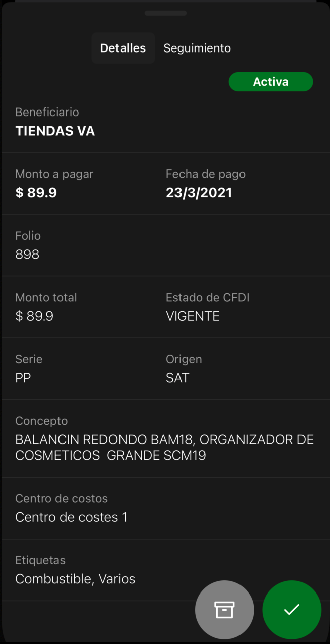

Guía rápida de usuario de la versión Móvil
EzBill cuenta con una aplicación tanto para android como para iOS diseñada para usuarios con un perfil de usuario Autorizador a través de la cual podrá realizar las siguientes funcionalidades:
-
Consulta de saldo en Bancos
-
Búsqueda de rdenes de Pago
-
Cambios de estado de las rdenes de Pago
-
De
RecibidahaciaLiberada - De
LiberadahaciaAutorizada
Recuerda que también es posible regresar las órdenes al estado anterior.
A continuación se describen las pantallas y sus funcionalidades.
Inicio de la App
Una vez que hayas descargado e instalado la aplicación en tu dispositivo móvil, al abrirla verás la siguiente pantalla, a través de la cual podrás Iniciar Sesión o Crear una cuenta si aún no tienes tu cuenta EzBill
Crear una cuenta
Si aún no tienes una cuenta en EzBill, puedes crear una de la siguiente manera. En la pantalla principal haz Tapen el botón Crear una cuenta e introduce los siguientes datos:
- Nombre: De manera ideal introduce tu nombre completo, incluyendo apellidos.
- Correo: Dirección de correo válida, que servirá como tu nombre de usuario.
- Contraseña y Confirmar Contraseña: Escribe en ambos campos la frase que usarás como contraseña para tu cuenta. Deberás asegurarte de escribir la misma frase en ambos campos.
EzBill enviará a la dirección de correo electrónico que registres en este formulario, el correo de validación de tu cuenta. Asegúrate de que utilices una cuenta existente y a la que tengas acceso.
Inicio de Sesión
Para iniciar sesión haz Tap en el botón Inicia Sesión e introduce tus datos de usuario, Correo y Contraseña y por último haz Tap en el botón Iniciar Sesión
Pantalla Principal
Una vez que has iniciado sesión en la aplicación verás la siguiente pantalla la cual se describe a continuación 1. Menú Principal 2. Tarjetas de Saldo en Bancos 3. Buscador rápido 4. Filtros de Búsqueda 5. Selectores de rdenes de Pago por estado 6. Listado de rdenes de Pago
Los distintos elementos se describen de manera detallada a continuación:
Menú Principal
En este menú encontrarás acceso a las función de Ajustes y rdenes de Pago
Funcionalidad
Los más importante en nuestra aplicación móvil, es el flujo operativo de las rdenes de Pago que consiste en avanzar por los siguientes estados:
- Recibida: Es el estado inicial de todas las rdenes de Pago, este estado se establece cuando se ha sincronizado con el SAT y se ha agreado a tu base de datos la Orden de Pago.
- Liberadas: Son aquellas rdenes de Pago que han sido liberadas y podrán ser consideradas para ser autorizadas.
- Autorizadas: Son aquellas rdenes de Pago que han sido consideradas para Pago.
El flujo de las rdenes de pago es el siguiente: Recibidas > Liberadas > Autorizadas
El trabajo inicia en la sección Recibidas.
El hacer tap sobre cualquier de las Ordenes de Pago, accederás a la vista de Detalle de la misma

En esta pantalla podrás editar dos campos:
- Beneficiario
- Fecha de pago
Los demás campos son únicamente de lectura.
Dentro de esta pantalla están disponibles dos acciones:
- Confirmar: Guardará los cambios que hayas realizado, y mueve la Orden de Pago a su siguiente estado.

- Archivar: Guardará la Orden de Pago en un archivo y la quitará del flujo operativo.

ℹ️ Es importante mencionar que al Archivar una Orden de Pago, esta no se elimina, unicamente se quita del flujo operativo normal. Todas las rdenes de Pago archivadas podrán ser visibles a través de un filtro.
- Desarchivar: Cuándo una Orden de Pago ha sido archivada aparecerá el botón para desarchivar.

- Cancelar, Regresar: Regresa la Orden de Pago a su estado previo.

Para cerrar la vista de Detalle solo desliza hacia abajo la pantalla desde el borde superior.
Este mismo funcionamiento aplica para los diferentes estados (secciones)
Filtros
La aplicación cuenta con una herramienta de búsqueda o filtros que facilitará la localización de las rdenes de Pago.
A continuación se describe la vista de filtros.
- Permite activar la búsqueda de las rdenes de Pago que han sido archivadas
- Filtro por Monto, de un valor mínimo a un valor máximo
- Filtro por Rango de Fechas, especificando Fecha Iniciar y una Fecha Final
- Filtro por Beneficiario, seleccione un Beneficiario de la lista.
- Filtro por Centro de costos, seleccione el Centro de costos de la lista.
Es importante mencionar que es posible combinar filtros
Seguimiento (comunicación)
Una de las funcionalidades destacadas de EzBill es el poder establecer un seguimiento de las rdenes de Pago a través de la comunicación con otros usuario o inclusive con proveedores.
En esta sección es posible registrar notas haciendo uso de las menciones, las cuales consisten en relacionar a otros usuario y/o proveedores a través de una @ y el nombre del contacto.
También es posible mencionar roles a través del # y seleccionado el grupo de usuarios, por ejemplo, autorizadores, pagadores, etc.
En la vista de Seguimiento, registre su nota y consulte el historial de notas que se han ido registrando dentro de la Orden de Pago